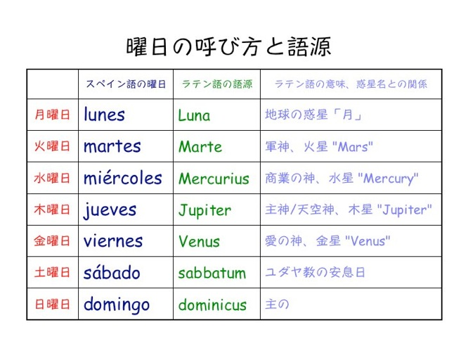

semana
> 曜日の言い方 Días de la semana 英語と違い、大文字で始めない。 sábado, domingo の複数形は sábados, domingos。 それ以外は同形。 定冠詞 el をつけると「今度の何曜日に」という副詞句になる。 No hay clases el viernes. (There will be no classes this Friday.) 複数の定冠詞 los をつけると、「毎週何曜日に」という副詞句になる。 Tengo español los martes y jueves. (I have Spanish on Monday and Thursday.) 同種の単語が続く時は、定冠詞は最初の単語にだけつける。
